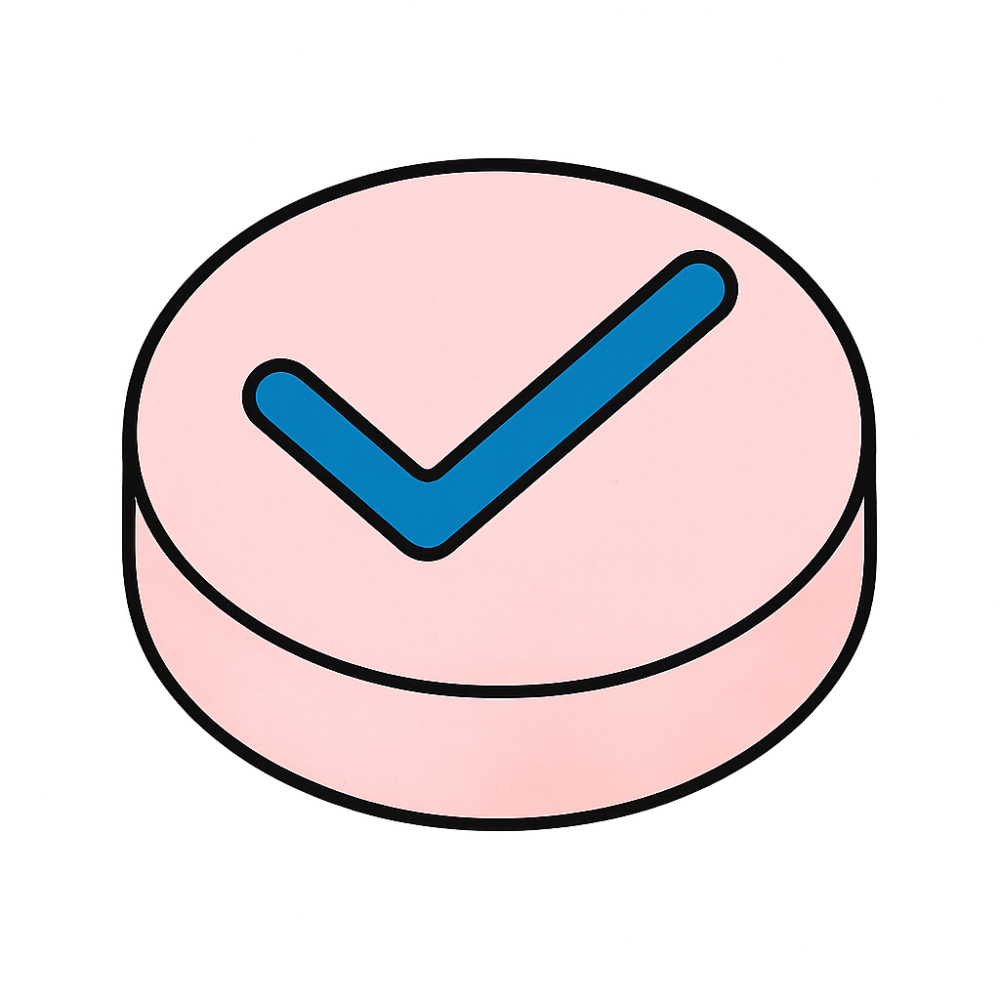

PD-Check
PD-Check
Zum digitalen Notfallkontrazeption Abgabe-Tool
Guidelines und hilfreiche Dokumente
Abgabeprotokoll Notfallkontrazeption
Differenziertes Vorgehen Notfallkontrazeption
Illustration zur Beratung
Kommentare Notfallkontrazeption
Wissenswertes zur Notfallverhütung mit Levonorgestrel
Wissenswertes zur Notfallverhütung mit Ulipristal